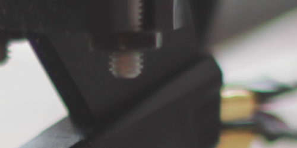

Slider
2013.09.30
CSS3 translate / transition で動くスライダー
Browser / Device
iPhone / Android (3以上?) / PC ie以外
モード1： CoverFlow


mode option
/* js */
var options = {
mode: {
coverFlow: {
detect: (function() {
return true; // ブラウザ分岐など振り分け可能
})(),
animation: {
stepMove: null,
slide: {
time: 300,
ease: 'ease-in-out',
delay: 0
},
image: {
time: 200,
ease: 'linear',
delay: 20
}
},
margin: -60
}
}
}
var slider = _l.cpt.slider(options);
slider.init();
モード2: Plain [Default]
mode option
/* js */
var options = {
mode: {
plain: {
detect: (function() {
return true; // ブラウザ分岐など振り分け可能
})(),
animation: {
stepMove: null,
slide: {
time: 300,
ease: 'ease-in-out',
delay: 0
}
},
margin: 10
}
}
}
var slider = _l.cpt.slider(options);
slider.init();
Option
必要に応じて適宜以下のオプションを適用してください。
※ モードに関わらず適応されます。
ループさせる
- 1
- 2
 3
3- 4
- 5
- 6
- 7
- 8
- 9
- 10
- 11
- 12
- 13
- 14
- 15
- 16
/* js */
// optionの設定
var options = {
context: $('.sample_03 .slider'),
loop: true, // loop
mode: {
coverFlow: {
detect: (function() {
return true;
})()
}
}
};
var slider = _l.cpt.slider(options);
slider.init();
バレットを表示
/* js */
// optionの設定
var options = {
context: $('.sample_04 .slider'),
bulletClick: true, // falseにすればclickイベントなし
mode: {
coverFlow: {
detect: (function() {
return true;
})()
}
}
};
var slider = _l.cpt.slider(options);
slider.init();
ローディングを表示
/* js */
// optionの設定
var options = {
context: $('.sample_05 .slider'),
mode: {
coverFlow: {
detect: (function() {
return true;
})()
}
}
};
//loading設定
var $slider = $('.sample_05 .slider'),
$frame = $slider.find('.images'),
$loading = $slider.find('.loading'),
$progress = $loading.find('.progress');
var progressWidth = 300;
$progress.width(0);
options.loading = true;
options.loadingMinTime = 400;
options.loadingStart = function() {
}
options.loadingProgress = function(progress, all) {
// console.log((progress / all * 100) + '%');
$progress.width( progressWidth * progress / all);
}
options.loadingEnd = function() {
$loading.delay(400).fadeOut(600);
}
var slider = _l.cpt.slider(options);
slider.init();
ウインドウリサイズに対応 (リキッド/ レスポンシブ用)
/* js */
// optionの設定
var options = {
context: $('.sample_06 .slider'),
resize: true, // resize
mode: {
coverFlow: {
detect: (function() {
return true;
})()
}
}
};
var slider = _l.cpt.slider(options);
slider.init();
// もしくは、window.resize時に、
// slider.refresh(); を実行すると、
// .images のサイズに合わせて、レイアウトを自動調整します。
一定間隔で自動スライド
/* js */
// optionの設定
var options = {
context: $('.sample_07 .slider'),
interval: true, // interval
intervalTime: 5000, // time
mode: {
coverFlow: {
detect: (function() {
return true;
})()
}
}
};
var slider = _l.cpt.slider(options);
slider.init();
prev/nextを表示しない
/* html */ /* .prev および .next をトルツメするだけ */
prev/nextでスライドする個数を変更
/* js */ options.step = 3;
初期表示のセンターを変更
/* js */ options.center = 10;
swipeをやめる
/* js */ options.swipe = false; options.mouseSwipe = false;
画像にイベントをバインド
// eventをバインドするとき
// 通常と同様にpreventDefaultを使用できます
$('.slide li').on('sliderclick', function(e) {
// e.preventDefault();
console.log('bind event');
});
指定のクラス名/HTML構造
以下の構造を担保したhtmlとしてください。
フレーム
- context .main
- context .main .images
- context .main .images > ul > li
バレット
- context .bullet
- context .bullet > ul
- context .bullet > ul > li
- /* 要素あれば番号挿入 */
context .bullet > ul > li .number
ボタン /* 要素あればクリック可能に */
- context .prev
- context .next
※ モードによってクラス名が自動付与されます
- context .main.plain
- context .main.cover_flow